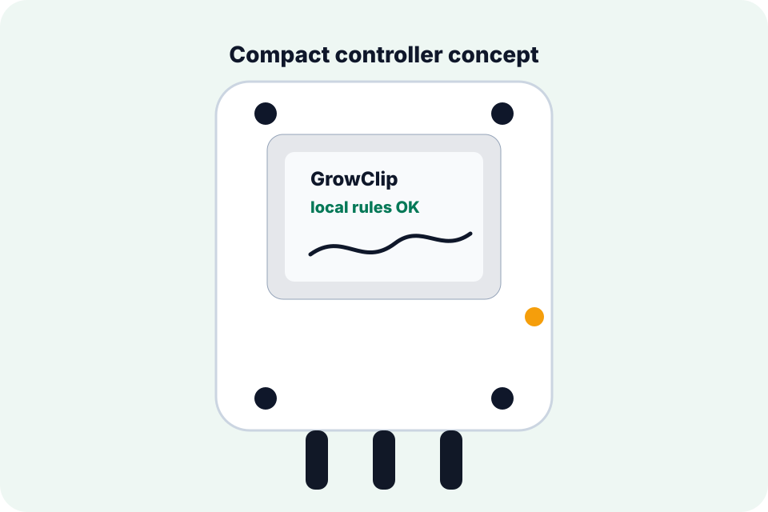
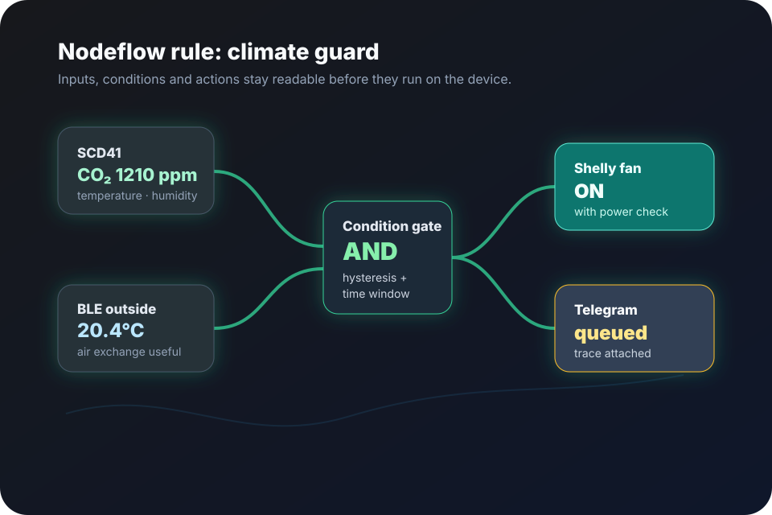
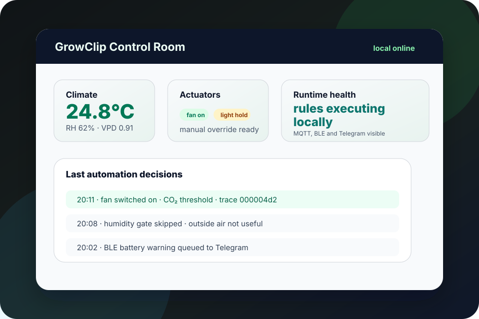

GrowClip
GrowClip combines sensors, BLE, MQTT, local outputs and notifications in one embedded system. The main firmware repository is private; this page presents the product concept, architecture and selected implementation ideas without exposing the device source code.

Measure → decide → act → explain
The platform follows a simple embedded control model. Inputs feed processing nodes, processing nodes decide, and outputs drive hardware or communication channels. Observability is treated as part of the product rather than an afterthought.
Built like an embedded system, not only a dashboard
On-device execution
Automation remains close to the hardware. Internet services can add notifications or time sync without becoming the only control path.
microSD history & archive
Decision and sensor history can be persisted locally so failures, threshold crossings and runtime behavior can be inspected later.
Runtime visibility
System status, rule telemetry, logs and host-side tests are used to reduce “it sometimes fails” debugging.
BLE + Wi-Fi + MQTT
The platform integrates local sensors and network devices while keeping the control model consistent.
Embedded web interface
A browser UI exposes configuration, flow editing and system state while the real control logic stays on the ESP32-S3.
Real sensors and outputs
The project is developed around physical devices, power constraints, GPIO, buses, persistent storage and recovery behavior.
What the private platform looks like from the outside
These are public mockups derived from the standalone marketing/demo layer. They do not contain the private device runtime.

Sensor values and conditions feed concrete actions in a graph that can be reviewed before it runs.

The web layer combines current state, manual control and a readable history of automation decisions.
Embedded + networking + product tooling
The flagship codebase is private, but the technologies and engineering areas below reflect the system being developed.
GrowClip is the larger ongoing project behind this showcase, so the firmware and full device runtime are intentionally not published. Architecture, design trade-offs, testing strategy and implementation details can still be discussed during a technical interview. Public repositories on the GitHub profile provide additional code samples from ESP32-S3, ESP32-C6 Zigbee, USB networking, BLE and hardware projects.